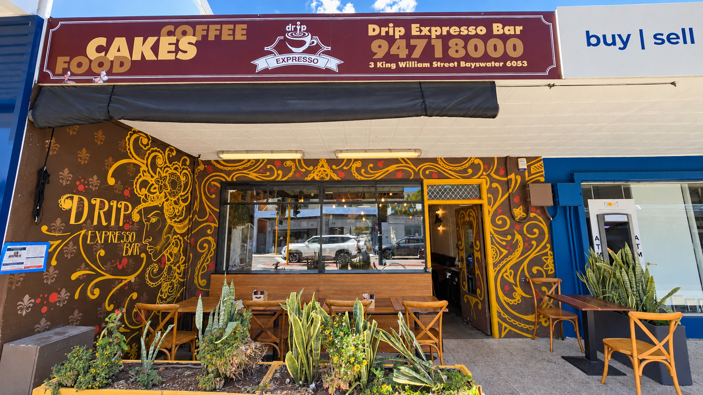
Photo: Drip Expresso from the footpath: the maroon sign, a gold mural on a brown wall, the big window, the mustard door on the right and small tables among mustard planter boxes.
Bayswater · opposite the station
Drip Expresso
Scroll to come in
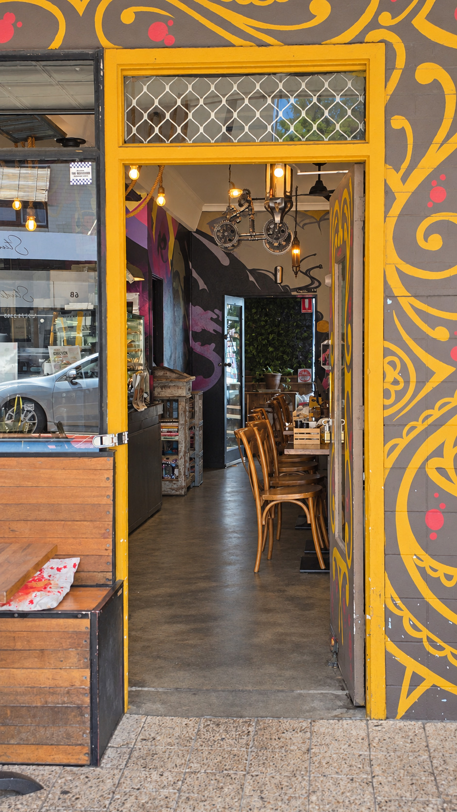
Photo: The open door in its mustard frame, looking into the café: hanging lamps, chairs and a long narrow room.
Come in.
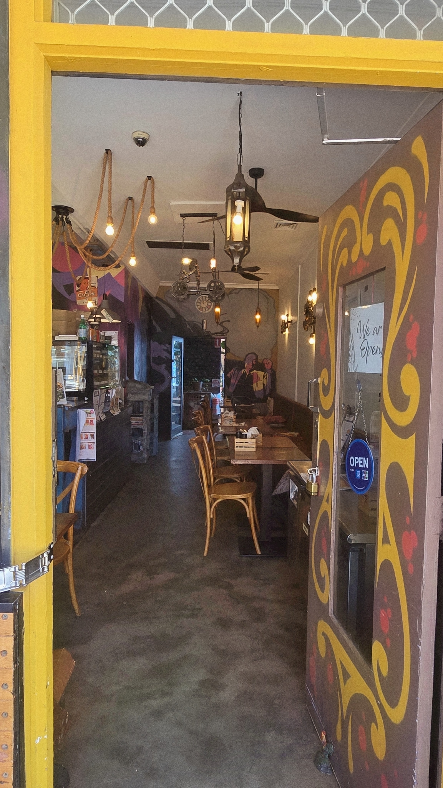
Photo: Just inside: rope lights and a lantern under a ceiling fan, the counter on the left, the tables and banquette on the right.
Inside
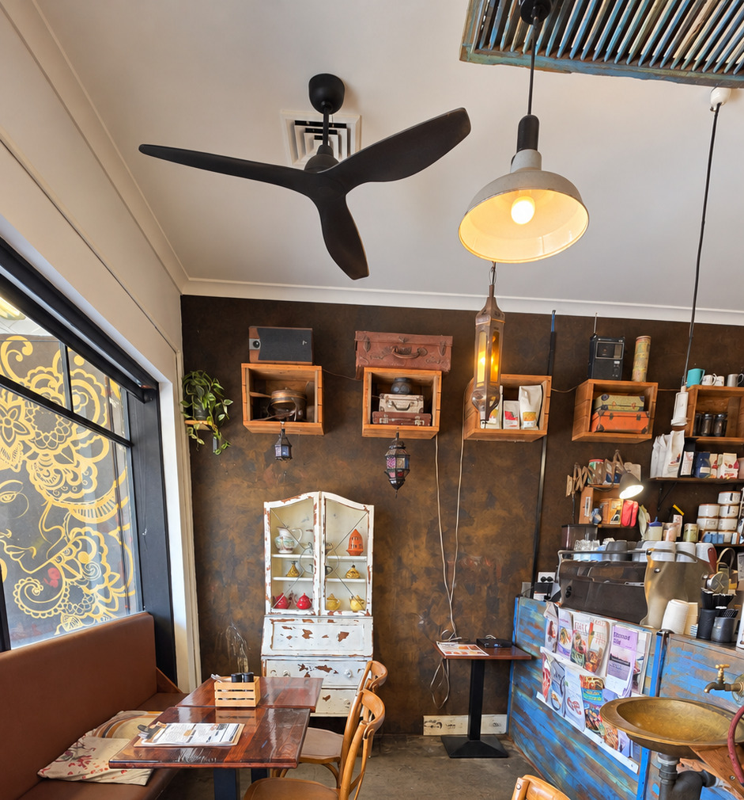
Photo: The front corner by the window: a chipped white cabinet of teapots, crates on the wall, a black ceiling fan and small tables.
By the window
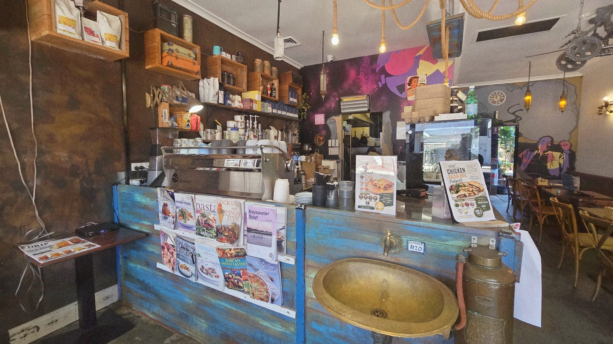
Photo: The blue counter, worn back to the wood: a brass basin with its own tap, an old copper extinguisher, cookbooks and the coffee machine behind.
The blue counter
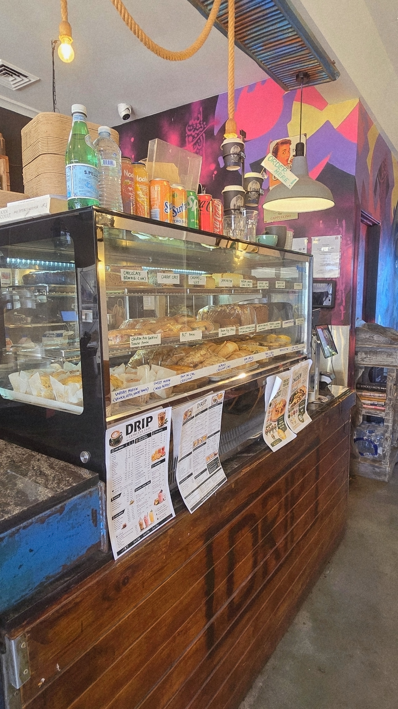
Photo: The glass cake cabinet on the counter, with the dark boards below.
With your coffee
A toastie and a coffee
$15 any Quick Food toastie with a regular coffee
$16 the same, with a large coffee
Ask which coffees are included.
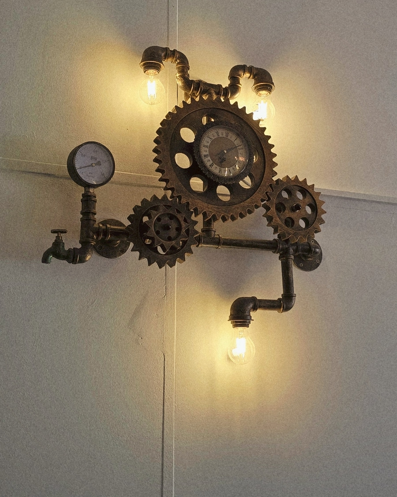
Photo: A wall lamp made of pipes and gears, with a small clock in the largest gear and three warm bulbs.
The banquette wall
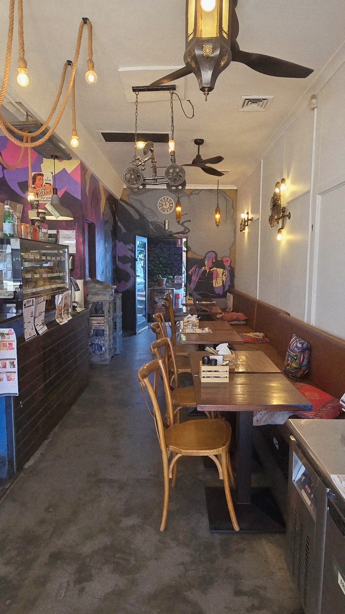
Photo: The long room: a lantern under the ceiling fan, rope lights on the left, the banquette on the right and an open door at the far end.
The long room
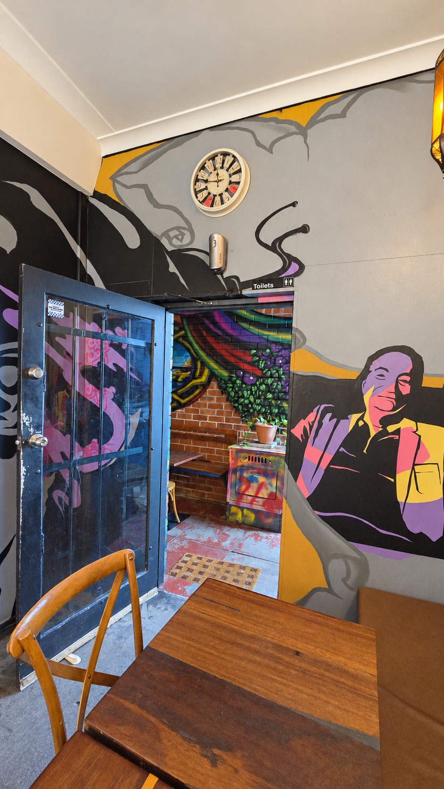
Photo: At the back of the room: a clock in a painted cloud, a large painted figure, and the open door to a small covered nook.
The back door
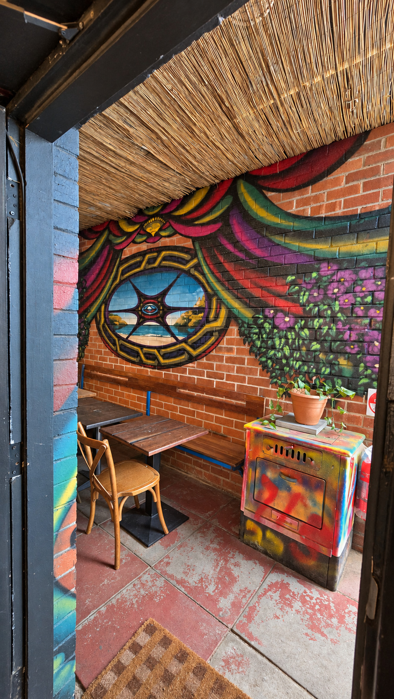
Photo: The small covered nook out back: a reed ceiling, red brick painted with a round window onto the sea, a wooden table, a chair and a stove sprayed in every colour.
Stay a while.
A small covered corner out back.
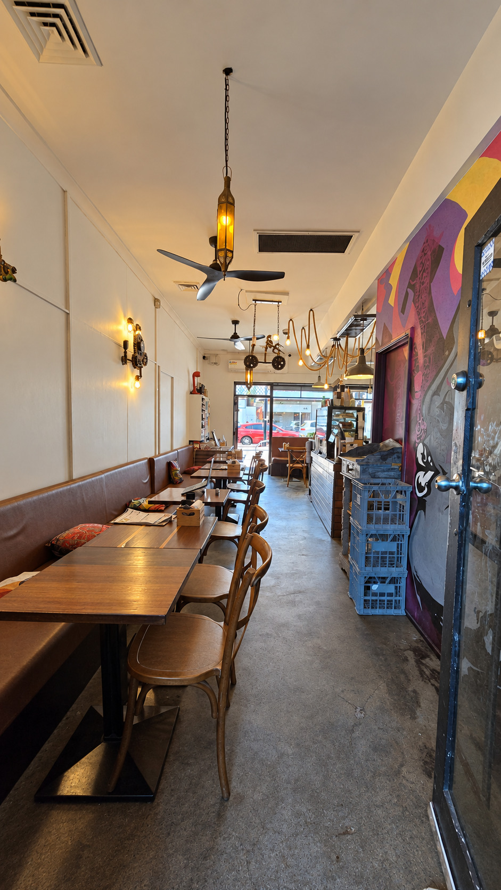
Photo: The long room seen from the back: the banquette on the left, the counter on the right, daylight from the street at the far end.
Photo: The shopfront of Drip Expresso: the gold mural and the mustard door.
Drip Expresso
See you soon.
- Café
- 6am – 3pm, Monday to Sunday
- Kitchen
- 6:30am – 2:30pm, every day
Opposite Bayswater Station
Public holiday surcharge: 15%.
Good Coffee • Good Vibes • Great Times